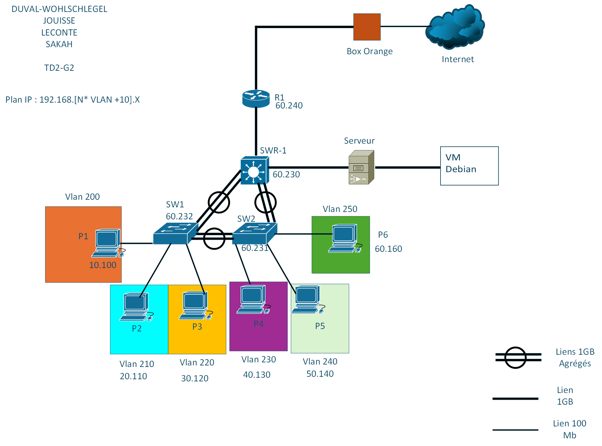

SAÉ 1.02
S'initier aux réseaux
informatiques
Première SAÉ orientée réseaux : prise en main des fondamentaux d'une infrastructure locale, configuration de base des équipements et validation du fonctionnement du LAN.
Description & Objectifs
Contexte du projet et compétences visées
La SAÉ 1.02 — S'initier aux réseaux informatiques est le premier projet pratique de réseau de notre cursus. Son objectif était de nous familiariser avec les équipements réseau physiques et simulés, d'assimiler les concepts d'adressage IPv4 et de valider le fonctionnement d'un réseau local simple (LAN).
En nous basant sur un cahier des charges d'une petite agence, nous devions concevoir un plan d'adressage IP sans gaspillage, concevoir la maquette sur le logiciel **Cisco Packet Tracer**, puis réaliser le câblage physique réel en salle de travaux pratiques. Il s'agissait également d'apprendre à configurer de base les commutateurs (Cisco Catalyst) et routeurs pour assurer la connectivité.
Ce projet a été l'occasion de manipuler pour la première fois le CLI (Command Line Interface) d'iOS Cisco, de comprendre le routage statique de base et de diagnostiquer des dysfonctionnements physiques de réseau local.
Apprentissages Critiques mobilisés
Apprentissages critiques du référentiel BUT R&T travaillés dans ce projet
Compétences théoriques et pratiques mobilisées pour la restructuration globale de l'architecture LAN et de ses services.
🌐 Adressage & Plan de réseau
- Calcul des plages d'adresses IPv4, masques et passerelles pour les différents services.
- Modélisation de la topologie réseau physique et logique dans Cisco Packet Tracer.
- Attribution d'adresses de manière statique et par serveur DHCP.
🛠️ Configuration Cisco iOS
- Prise en main du CLI (console) pour la configuration initiale (hostname, mots de passe enable/secret).
- Sécurisation des accès (lignes console, VTY, bannières d'avertissement).
- Configuration d'une adresse IP d'administration sur le VLAN 1 d'un commutateur Catalyst.
🔍 Diagnostic & Câblage
- Câblage physique de la maquette (câbles droits/croisés Ethernet RJ45).
- Utilisation des commandes de diagnostic (ping, traceroute, show ip interface brief).
- Résolution de dysfonctionnements de connectivité basiques (erreurs d'interfaces, mauvais masques).
Tâches réalisées
Déroulement technique et méthodologie appliquée
1. Conception du plan d'adressage IPv4 de l'agence
Nous devions découper une plage d'adresses réseau privée de classe C (192.168.1.0/24) pour alimenter deux bureaux de l'agence (le bureau administration et le bureau technique). Nous avons dimensionné les masques pour accueillir les machines et affecté les passerelles par défaut sur le routeur local.
2. Maquettage logique et simulation sous Cisco Packet Tracer
Avant de manipuler le matériel réel, nous avons reproduit la topologie cible sur Packet Tracer : un routeur Cisco 2911 reliant notre LAN à un serveur externe simulé, et un switch Catalyst 2960 connectant les différents postes de travail. Nous avons validé la logique de routage et d'adressage en lançant des pings en mode simulation.
3. Configuration initiale de base des équipements actifs
En console via câble bleu RJ45-DB9, nous avons configuré les commutateurs et le routeur :
• Renommage des hôtes (hostname Router-Passerelle, hostname Switch-Access).
• Sécurisation du mode privilégié (enable secret) et de la ligne console (password, login).
• Écriture d'une bannière de sécurité (banner motd).
• Configuration de l'IP d'administration du switch sur l'interface virtuelle Vlan1.
4. Câblage physique de la maquette en salle de TP
Nous avons réalisé le câblage physique sur notre armoire de TP : connexion des postes clients (PCs sous Windows) aux ports du commutateur en câble droit, et liaison du commutateur au port Gigabit du routeur. Nous avons appris à identifier les câbles et à observer les diodes d'état des ports (orange, vert).
5. Validation et diagnostic de connectivité
Afin de valider la maquette, nous avons effectué des tests de connectivité (ping et traceroute) entre les postes clients et les interfaces du routeur. Nous avons résolu des problèmes d'accès en vérifiant les configurations réseau des clients (passerelles mal renseignées) et en utilisant les commandes Cisco show interfaces pour détecter d'éventuels ports désactivés (shutdown).
Résultats & Preuves
Livrables, topologie et configurations techniques réelles du prototype
Topologie Réseau Logique sous Packet Tracer

Figure 1 : Topologie réseau logique simulée (Postes clients, Switch local et Passerelle routeur)
! Configuration Switch d'Accès
Switch> enable
Switch# configure terminal
Switch(config)# hostname Switch-Access
Switch-Access(config)# enable secret secret123
Switch-Access(config)# line console 0
Switch-Access(config-line)# password consolepass
Switch-Access(config-line)# login
Switch-Access(config-line)# exit
Switch-Access(config)# interface Vlan1
Switch-Access(config-if)# ip address 192.168.1.250 255.255.255.0
Switch-Access(config-if)# no shutdown
Switch-Access(config-if)# exit
Switch-Access(config)# ip default-gateway 192.168.1.254! Configuration de la passerelle LAN sur le routeur
Router> enable
Router# configure terminal
Router(config)# hostname Router-Gateway
Router-Gateway(config)# interface GigabitEthernet0/0
Router-Gateway(config-if)# ip address 192.168.1.254 255.255.255.0
Router-Gateway(config-if)# no shutdownAutoévaluation réflexive
Analyse critique de mon expérience et de ma progression
no shutdown.show ip interface brief et show ip route pour isoler les interfaces inactives.Notions de base
En développement
Autonome
Peut enseigner